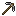
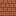
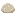
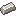
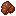
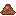
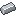
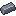
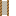
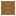

Before you startZanim zaczniesz
Know the world and what zutm changes.Poznaj świat i to, co zmienia zutm.
The world is huge vertically: it goes from y −2032 to 2032. zutm ores (titanium, chrysotile, galena) are found at every depth - a shallow band near the surface and a deep layer all the way down.
Świat jest ogromny w pionie: od y −2032 do 2032. Rudy zutm (tytan, chryzotyl, galena) są na każdej głębokości - płytki pas przy powierzchni i głęboka warstwa aż do samego dna.
Mine iron, coal and copper as usual. Also look for calcite (in dripstone caves and amethyst geodes): it becomes flux, the first zutm material.
Wydobywaj żelazo, węgiel i miedź jak zwykle. Szukaj też kalcytu (jaskinie naciekowe i geody ametystu): z niego robi się topnik, pierwszy materiał zutm.
CraftingWytwarzanieCACalciteKalcyt→9FluxTopnikMining coal, chrysotile or galena ore throws dust into the air. One block is harmless, a mine full of dust is not - read the Safety tier before you dig long tunnels.
Kopanie rudy węgla, chryzotylu lub galeny wzbija pył. Jeden blok nie szkodzi, kopalnia pełna pyłu już tak - przeczytaj etap Bezpieczeństwo, zanim wykopiesz długie chodniki.
You unlockOdblokowujesz
Steel ageEpoka stali
Build the Big Furnace and make steel.Zbuduj Wielki Piec i zrób stal.
Build it in the world from a Big Furnace Blueprint: a 3×3 tower 7 high - a base of stone (or deepslate) bricks with the centre one on the blueprint, 5 layers of a firebrick + with iron bars in the corners, a lid of 9 iron trapdoors. Then 9 fireclay on the marked front brick of the 4th layer, the chisel on the front of the base (it cuts the opening), shift + right-click with an empty hand. Taken apart it gives most of the materials back.
Zbuduj go w świecie z Planu wielkiego pieca: wieża 3×3 wysoka na 7 - podstawa z kamiennych (lub łupkowych) cegieł ze środkową na planie, 5 warstw krzyża z cegieł szamotowych z żelaznymi kratami w rogach, pokrywa z 9 żelaznych klap. Potem 9 gliny ogniotrwałej na zaznaczoną przednią cegłę 4. warstwy, dłuto na przód podstawy (wycina otwór), shift + prawy klik pustą ręką. Rozebrany oddaje większość materiałów.
Load iron, flux and coal. Every 10 seconds one of each becomes 2 steel ingots and 1 slag.
Włóż żelazo, topnik i węgiel. Co 10 sekund po jednej sztuce zamienia się w 2 sztabki stali i 1 żużel.
Make steel tools and armour - harder than iron (450 uses, speed 7).
Zrób stalowe narzędzia i zbroję - twardsze od żelaza (450 użyć, szybkość 7).
CraftingWytwarzanie→ Steel IngotSztabka staliSteel IngotSztabka staliSteel IngotSztabka staliSTStickPatykSTStickPatyk
Steel IngotSztabka staliSteel IngotSztabka staliSteel IngotSztabka staliSTStickPatykSTStickPatyk
Steel PickaxeStalowy kilof
You unlockOdblokowujesz
The foundryOdlewnia
Melt metal, alloy it and cast it into shapes.Topić metal, robić stopy i odlewać kształty.
Build a Firebox (an open coal fire) and put a Crucible on top of it. The crucible needs steel.
Zbuduj Palenisko (otwarty ogień na węglu) i postaw na nim Tygiel. Tygiel wymaga stali.
CraftingWytwarzanieBRBricksCegłyBRBricksCegłyBRBricksCegłyCACauldronKociołBRBricksCegły→CrucibleTygielSteel IngotSztabka staliSteel IngotSztabka staliSteel IngotSztabka staliThe firebox is not crafted - it is built in the world from a Firebox Blueprint. Use the blueprint on the ground - that block is the centre, and ghost blocks show the 3×3. Look at a ghost to see what is still needed. Then, in this order: 1) 9 firebricks - 8 around placed normally, the 9th right-clicked onto the blueprint; 2) fireclay on the centre 4×; 3) the chisel on the centre cuts the opening (it loses durability); 4) shift + right-click the centre with an empty hand - the firebox appears. Taken apart it gives back 8 firebricks and 4 loose firebricks.
Palenisko nie jest wytwarzane - buduje się je w świecie z Planu paleniska. Użyj planu na ziemi - ten blok to środek, a ghost bloki pokazują 3×3. Najedź na ghost blok, żeby zobaczyć, czego jeszcze brakuje. Potem w tej kolejności: 1) 9 cegieł szamotowych - 8 dookoła stawiasz normalnie, 9. prawym klikiem na plan; 2) glina ogniotrwała na środek 4×; 3) dłuto na środek wycina otwór (traci wytrzymałość); 4) shift + prawy klik na środek pustą ręką - powstaje palenisko. Rozebrane oddaje 8 bloków cegieł szamotowych i 4 cegły.
Real thermodynamics: the embers heat the crucible through the opening, the metal warms by its heat capacity and melts at its real melting point (iron 1538 °C, copper 1085 °C, aluminium 660 °C, lead 327 °C).
Prawdziwa termodynamika: żar grzeje tygiel przez otwór, metal nagrzewa się zgodnie z pojemnością cieplną i topi w swojej prawdziwej temperaturze (żelazo 1538 °C, miedź 1085 °C, glin 660 °C, ołów 327 °C).
Alloy steel in the crucible: 16 parts iron + 8 carbon (coal) + 8 flux give 16 parts steel (an ingot is 72 parts).
Stop stali w tyglu: 16 części żelaza + 8 węgla + 8 topnika daje 16 części stali (sztabka to 72 części).
Lay Foundry Channels from the spout to Casting Basins and put a mold in each basin. Molds come from a Blank Mold plus the pattern: nugget, ingot, thick plate or block.
Poprowadź Rynny od dzióbka do Form odlewniczych i włóż do każdej matrycę. Matryce robi się z pustej matrycy i wzoru: bryłka, sztabka, gruba blacha albo blok.
CraftingWytwarzanieBRBrickCegłaBRBrickCegłaBRBrickCegłaBRBrickCegłaBRBrickCegła→
4Foundry ChannelRynna odlewniczaCraftingWytwarzanieSBStone BricksKamienne cegłySBStone BricksKamienne cegłySBStone BricksKamienne cegłySBStone BricksKamienne cegłySBStone BricksKamienne cegły→Casting BasinBasen odlewniczyCraftingWytwarzanieIIIron IngotSztabka żelazaIIIron IngotSztabka żelazaIIIron IngotSztabka żelazaIIIron IngotSztabka żelaza→ Blank MoldPusta formaCraftingWytwarzanie→Ingot MoldForma na sztabkiBlank MoldPusta formaIIIron IngotSztabka żelaza
Blank MoldPusta formaCraftingWytwarzanie→Ingot MoldForma na sztabkiBlank MoldPusta formaIIIron IngotSztabka żelaza
You unlockOdblokowujesz

FireclayGlina ogniotrwałaHydraulic pressPrasa hydrauliczna
Recycle scrap and press coke.Przetapiaj złom i prasuj koks.
The Hydraulic Press is coal-fired: a boiler makes steam that drives the ram. It works with stamps.
Prasa hydrauliczna jest opalana węglem: kocioł robi parę, która napędza tłok. Pracuje ze stemplami.
CraftingWytwarzanieIIIron IngotSztabka żelazaPIPistonTłokIIIron IngotSztabka żelazaIIIron IngotSztabka żelazaWBWater BucketWiadro wodyIIIron IngotSztabka żelazaBRBricksCegłyFUFurnacePiecBRBricksCegły→ Hydraulic PressPrasa hydrauliczna
Hydraulic PressPrasa hydraulicznaBar stamp: scrap worth 72 parts becomes an ingot again.
Stempel sztabkowy: złom wart 72 części znów staje się sztabką.
CraftingWytwarzanieIIIron IngotSztabka żelazaIIIron IngotSztabka żelazaIngot MoldForma na sztabkiIIIron IngotSztabka żelazaIIIron IngotSztabka żelaza→Bar StampStempel do sztabek
You unlockOdblokowujesz
ElectricityElektryczność
Generate power and wire your machines.Wytwarzaj prąd i podłącz maszyny.
For now electricity is a test setup (creative mode only - no crafting recipes): a Power Source, whose every socket has its own voltage and power, set in its GUI. Real generators will come later.
Na razie prąd to zestaw testowy (tylko w trybie kreatywnym - bez receptur): Źródło zasilania, którego każde gniazdo ma własne napięcie i moc, ustawiane w GUI. Prawdziwe generatory przyjdą później.
Cables are copper. Link a cable by aiming at the exact segment or strand - never by just placing it next to another. Bundles start empty: add strands one by one.
Kable są z miedzi. Łączysz je, celując w konkretny odcinek lub żyłę - nigdy przez samo postawienie obok. Wiązki zaczynają puste: dokładaj żyły po jednej.
Ohm's law is real: each cable has an ampacity (3 px 20 kA, 6 px 80 kA, 10 px 220 kA, 14 px 430 kA). Overload it and it glows yellow, then red, then burns.
Prawo Ohma działa naprawdę: każdy kabel ma obciążalność (3 px 20 kA, 6 px 80 kA, 10 px 220 kA, 14 px 430 kA). Przeciążony świeci na żółto, potem na czerwono, potem się pali.
A Power Receiver shows amps, volts and watts on its screen - use it to check your network.
Odbiornik zasilania pokazuje na ekranie ampery, wolty i waty - sprawdzisz nim sieć.
You unlockOdblokowujesz
Electric machinesMaszyny elektryczne
Roll plates and wire, and double your ore.Walcuj blachy i drut, podwajaj rudę.
Rolling Mill (2×2×2): smooth rollers turn a thick plate into a plate, grooved rollers turn a plate into wire. It runs on electricity only: 5 kW from a cable.
Walcarka (2×2×2): walce gładkie robią z grubej blachy blachę, walce rowkowane robią z blachy drut. Działa tylko na prąd: 5 kW z kabla.
CraftingWytwarzanieIIIron IngotSztabka żelazaIIIron IngotSztabka żelazaIIIron IngotSztabka żelazaPIPistonTłokFUFurnacePiecPIPistonTłokIIIron IngotSztabka żelazaBOBlock of IronBlok żelazaIIIron IngotSztabka żelaza→Rolling MillWalcarkaCraftingWytwarzanieIIIron IngotSztabka żelazaIIIron IngotSztabka żelazaBOBlock of IronBlok żelazaIIIron IngotSztabka żelazaIIIron IngotSztabka żelaza→Iron RollerŻelazny walecCraftingWytwarzanieFLFlintKrzemieńFLFlintKrzemieńIron RollerŻelazny walecFLFlintKrzemieńFLFlintKrzemień→ Iron Grooved RollerŻelazny walec rowkowany
Iron Grooved RollerŻelazny walec rowkowanyRollers wear out. Iron, steel and titanium rollers last longer in that order. Times per piece: lead 1.5 s, aluminium 2.0 s, copper 2.5 s, iron 3.0 s, steel 3.5 s, titanium 4.5 s.
Walce się zużywają: żelazne, stalowe i tytanowe - w tej kolejności coraz trwalsze. Czas na sztukę: ołów 1,5 s, glin 2,0 s, miedź 2,5 s, żelazo 3,0 s, stal 3,5 s, tytan 4,5 s.
Rolling MillWalcarkaThick Iron PlateGruba blacha żelazna→Rolling MillWalcarka→Iron PlateBlacha żelaznaRolling MillWalcarkaIron PlateBlacha żelazna→Rolling MillWalcarka→Iron WireDrut żelaznyShredder (2×2×2, cable power only, 5 kW): one ore becomes 2 powders, and each powder smelts into an ingot - double yield. Below half power it stops, between half and full it runs at half speed.
Rozdrabniacz (2×2×2, tylko z kabla, 5 kW): jedna ruda daje 2 proszki, a każdy proszek przetapia się na sztabkę - podwójny uzysk. Poniżej połowy mocy stoi, między połową a pełną pracuje o połowę wolniej.
CraftingWytwarzanieIIIron IngotSztabka żelazaHOHopperLejIIIron IngotSztabka żelazaGRGrindstoneKamień szlifierskiBOBlock of RedstoneBlok czerwonego proszkuGRGrindstoneKamień szlifierskiIIIron IngotSztabka żelazaIIIron IngotSztabka żelazaIIIron IngotSztabka żelaza→ShredderRozdrabniaczCraftingWytwarzanieIIIron IngotSztabka żelazaIIIron IngotSztabka żelazaIIIron IngotSztabka żelazaIIIron IngotSztabka żelaza→ Iron Shredder BladeŻelazne ostrze rozdrabniaczaShredderRozdrabniaczIOIron OreRuda żelaza→ShredderRozdrabniacz→
Iron Shredder BladeŻelazne ostrze rozdrabniaczaShredderRozdrabniaczIOIron OreRuda żelaza→ShredderRozdrabniacz→ 2Iron PowderProszek żelazaFurnacePiecIron PowderProszek żelaza→FUFurnacePiec→IIIron IngotSztabka żelaza
2Iron PowderProszek żelazaFurnacePiecIron PowderProszek żelaza→FUFurnacePiec→IIIron IngotSztabka żelazaSteel ingots can be shredded into steel powder only with steel or titanium blades.
Sztabki stali da się rozdrobnić na proszek tylko ostrzami stalowymi lub tytanowymi.
ShredderRozdrabniaczSteel IngotSztabka stali→ShredderRozdrabniacz→ Steel PowderProszek stali
Steel PowderProszek staliThe shredder throws dust (75 mg per piece). In a closed room put an Air Filter or a Ventilation Fan next to it.
Rozdrabniacz wzbija pył (75 mg na sztukę). W zamkniętym pomieszczeniu postaw obok Filtr powietrza albo Wentylator.
You unlockOdblokowujesz
High temperature & titaniumWysoka temperatura i tytan
Reach 1700-2300 °C: titanium and graphite.Osiągnij 1700-2300 °C: tytan i grafit.
Craft the High Temperature Furnace. On its own coal grate it reaches about 1200 °C. Stand it on a Firebox: with coal underneath ~1820 °C, with blaze rods ~2300 °C. The hotter, the faster it smelts (up to ×4).
Wytwórz Piec wysokotemperaturowy. Na własnym ruszcie z węglem osiąga ok. 1200 °C. Postaw go na Palenisku: z węglem pod spodem ~1820 °C, z płomiennymi różdżkami ~2300 °C. Im goręcej, tym szybciej topi (do ×4).
CraftingWytwarzanieIIIron IngotSztabka żelazaBRBricksCegłyIIIron IngotSztabka żelazaBRBricksCegłyBFBlast FurnacePiec hutniczyBRBricksCegłyIIIron IngotSztabka żelazaRDRedstone DustCzerwony proszekIIIron IngotSztabka żelaza→ High Temperature FurnacePiec wysokotemperaturowy
High Temperature FurnacePiec wysokotemperaturowyTitanium melts at 1668 °C - smelt titanium ore, raw titanium or titanium powder on a coal-fired firebox.
Tytan topi się w 1668 °C - przetapiaj rudę, surowy tytan albo proszek tytanu na palenisku z węglem.
High Temperature FurnacePiec wysokotemperaturowyRaw TitaniumRuda tytanu→High Temperature FurnacePiec wysokotemperaturowy≥ 1668 °C→
Titanium IngotSztabka tytanuTitanium gear: 1100 uses, speed 8, mines obsidian, lighter so it swings faster; armour 3/8/6/3 with toughness 2. Titanium rollers and blades last the longest.
Sprzęt tytanowy: 1100 użyć, szybkość 8, kopie obsydian, lżejszy więc szybciej się nim macha; zbroja 3/8/6/3 i wytrzymałość 2. Tytanowe walce i ostrza są najtrwalsze.
CraftingWytwarzanieTitanium IngotSztabka tytanuTitanium IngotSztabka tytanuTitanium IngotSztabka tytanuSTStickPatykSTStickPatyk→ Titanium PickaxeTytanowy kilof
Titanium PickaxeTytanowy kilofGraphite: coal powder → furnace → coal coke → press → pressed coke bar → HT furnace at 2000 °C+ (blaze rods).
Grafit: proszek węgla → piec → koks → prasa → sprasowany koks → piec wysokotemperaturowy w 2000 °C+ (płomienne różdżki).
FurnacePiec Coal PowderPył węglowy→FUFurnacePiec→Coal CokeKoksHydraulic PressPrasa hydraulicznaCoal CokeKoks→Hydraulic PressPrasa hydrauliczna→
Coal PowderPył węglowy→FUFurnacePiec→Coal CokeKoksHydraulic PressPrasa hydraulicznaCoal CokeKoks→Hydraulic PressPrasa hydrauliczna→ Pressed Coke BarPrasowana kostka koksuHigh Temperature FurnacePiec wysokotemperaturowyPressed Coke BarPrasowana kostka koksu→High Temperature FurnacePiec wysokotemperaturowy≥ 2000 °C→
Pressed Coke BarPrasowana kostka koksuHigh Temperature FurnacePiec wysokotemperaturowyPressed Coke BarPrasowana kostka koksu→High Temperature FurnacePiec wysokotemperaturowy≥ 2000 °C→ Graphite IngotSztabka grafitu
Graphite IngotSztabka grafitu
You unlockOdblokowujesz
Aluminium before electricityGlin przed elektrycznością
The 1855 Le Chatelier route: bauxite to aluminium wire.Metoda Le Chateliera z 1855: od boksytu do drutu glinowego.
Find bauxite: flat, lobed lenses at y 50-80 in jungle, savanna and badlands; rare buried lenses in any biome down to −2032. Stone pickaxe → raw bauxite.
Znajdź boksyt: płaskie, klapowane soczewki na y 50-80 w dżungli, sawannie i badlands; rzadkie zakopane soczewki w każdym biomie aż do −2032. Kamienny kilof → surowy boksyt.
Shred raw bauxite (2 powders). Burn dried kelp in a furnace for kelp ash (soda).
Rozdrobnij surowy boksyt (2 proszki). Spal suszony wodorost w piecu na popiół (sodę).
ShredderRozdrabniacz
Raw BauxiteRuda boksytu→ShredderRozdrabniacz→
2Bauxite PowderSproszkowany boksytFurnacePiecDKDried KelpSuszony wodorost→FUFurnacePiec→Kelp AshPopiół z wodorostówSinter: HT furnace ≥ 1000 °C, bauxite powder in the chamber + kelp ash in the second tray → sodium aluminate.
Spiekanie: piec wysokotemperaturowy ≥ 1000 °C, proszek boksytu w komorze + popiół w drugiej tacce → glinian sodu.
High Temperature FurnacePiec wysokotemperaturowyBauxite PowderSproszkowany boksyt+Kelp AshPopiół z wodorostów→High Temperature FurnacePiec wysokotemperaturowy≥ 1000 °C→Sodium AluminateGlinian soduLeach: right-click a water cauldron with sodium aluminate → aluminium hydroxide + iron oxide (1 water level each).
Ługowanie: prawy klik glinianem sodu na kocioł z wodą → wodorotlenek glinu + tlenek żelaza (1 poziom wody na sztukę).
Calcine: HT furnace ≥ 1000 °C, aluminium hydroxide → alumina.
Kalcynacja: piec wysokotemperaturowy ≥ 1000 °C, wodorotlenek glinu → tlenek glinu.
High Temperature FurnacePiec wysokotemperaturowy Aluminium HydroxideWodorotlenek glinu→High Temperature FurnacePiec wysokotemperaturowy≥ 1000 °C→AluminaTlenek glinu
Aluminium HydroxideWodorotlenek glinu→High Temperature FurnacePiec wysokotemperaturowy≥ 1000 °C→AluminaTlenek glinuReduce: HT furnace ≥ 2000 °C (blaze-rod firebox), 4 alumina + 3 graphite → 1 aluminium ingot + aluminium carbide. The yield is poor on purpose - that is why aluminium was once more precious than gold.
Redukcja: piec wysokotemperaturowy ≥ 2000 °C (palenisko na płomiennych różdżkach), 4 tlenek glinu + 3 grafit → 1 sztabka glinu + węglik glinu. Uzysk celowo słaby - dlatego glin był kiedyś cenniejszy od złota.
High Temperature FurnacePiec wysokotemperaturowy4AluminaTlenek glinu+3Graphite IngotSztabka grafitu→High Temperature FurnacePiec wysokotemperaturowy≥ 2000 °C→
Aluminium IngotSztabka glinu+Aluminium CarbideWęglik glinuCast it in the foundry (660 °C) and roll it - aluminium is the softest common metal in the mill (2.0 s). Aluminium tools: speed of diamond, a bit less durable than iron.
Odlej go w odlewni (660 °C) i walcuj - glin jest bardzo miękki (2,0 s w walcarce). Narzędzia glinowe: szybkość diamentu, trochę mniej trwałe od żelaza.
Rolling MillWalcarka Aluminium PlateBlacha glinowa→Rolling MillWalcarka→Aluminium WireDrut glinowyCraftingWytwarzanieAluminium IngotSztabka glinuAluminium IngotSztabka glinuAluminium IngotSztabka glinuSTStickPatykSTStickPatyk→
Aluminium PlateBlacha glinowa→Rolling MillWalcarka→Aluminium WireDrut glinowyCraftingWytwarzanieAluminium IngotSztabka glinuAluminium IngotSztabka glinuAluminium IngotSztabka glinuSTStickPatykSTStickPatyk→ Aluminium PickaxeGlinowy kilof
Aluminium PickaxeGlinowy kilof
You unlockOdblokowujesz
Lead from galenaOłów z galeny
Roast and reduce galena - and protect yourself from the fumes.Praż i redukuj galenę - i chroń się przed dymem.
Galena veins are everywhere from the surface to −2032. Stone pickaxe → raw galena; shred it into 2 powders.
Żyły galeny są wszędzie od powierzchni do −2032. Kamienny kilof → surowa galena; rozdrobnij ją na 2 proszki.
ShredderRozdrabniacz Raw GalenaRuda galeny→ShredderRozdrabniaczdust 65.0 mgpył 65,0 mg→2Galena PowderSproszkowana galena
Raw GalenaRuda galeny→ShredderRozdrabniaczdust 65.0 mgpył 65,0 mg→2Galena PowderSproszkowana galenaRoast at ≥ 600 °C → lead oxide. Reduce 2 lead oxide + 1 coal at ≥ 900 °C → lead ingot. The furnace's own grate is enough.
Praż w ≥ 600 °C → tlenek ołowiu. Redukuj 2 tlenek ołowiu + 1 węgiel w ≥ 900 °C → sztabka ołowiu. Wystarczy własny ruszt pieca.
High Temperature FurnacePiec wysokotemperaturowyGalena PowderSproszkowana galena→High Temperature FurnacePiec wysokotemperaturowy≥ 600 °C→ Lead OxideTlenek ołowiuHigh Temperature FurnacePiec wysokotemperaturowy2Lead OxideTlenek ołowiu+COCoalWęgiel→High Temperature FurnacePiec wysokotemperaturowy≥ 900 °C→
Lead OxideTlenek ołowiuHigh Temperature FurnacePiec wysokotemperaturowy2Lead OxideTlenek ołowiu+COCoalWęgiel→High Temperature FurnacePiec wysokotemperaturowy≥ 900 °C→
Lead IngotSztabka ołowiuEvery batch lets lead fume into the room (US EPA AP-42: 80 mg roasting, 386 mg per ingot). Smelt in a room with a Ventilation Fan, wear a respirator and check the air with the Personal Air Sampler (limit 50 µg/m³).
Każda partia wypuszcza dym ołowiu do pomieszczenia (US EPA AP-42: 80 mg prażenie, 386 mg na sztabkę). Wytapiaj w pomieszczeniu z Wentylatorem, noś maskę i sprawdzaj powietrze Osobistym próbnikiem (limit 50 µg/m³).
A block of lead (11.34 g/cm³) is the best gamma shield in the mod: 4.4× heavier than stone.
Blok ołowiu (11,34 g/cm³) to najlepsza osłona przed gamma w modzie: 4,4× cięższy od kamienia.
CraftingWytwarzanieLead IngotSztabka ołowiuLead IngotSztabka ołowiuLead IngotSztabka ołowiuLead IngotSztabka ołowiuLead IngotSztabka ołowiuLead IngotSztabka ołowiuLead IngotSztabka ołowiuLead IngotSztabka ołowiuLead IngotSztabka ołowiu→Block of LeadBlok ołowiu
You unlockOdblokowujesz
Health & safetyZdrowie i bezpieczeństwo
Keep the dust out of your lungs.Nie wpuszczaj pyłu do płuc.
Coal dust causes black lung (CWP, PMF), asbestos causes asbestosis, lung cancer and mesothelioma, lead raises your blood lead. The risk models come from real studies (Attfield & Seixas, OSHA, ATSDR).
Pył węglowy powoduje pylicę (CWP, PMF), azbest - azbestozę, raka płuc i międzybłoniaka, ołów podnosi ołów we krwi. Modele ryzyka pochodzą z prawdziwych badań (Attfield i Seixas, OSHA, ATSDR).
Hold a Personal Air Sampler: coal mg/m³, asbestos fibres/cm³ and lead µg/m³, green / gold / red against the limits. Right-click for the protection factor you need.
Trzymaj Osobisty próbnik powietrza: węgiel mg/m³, azbest włókna/cm³ i ołów µg/m³, zielony / złoty / czerwony względem limitów. Prawy klik - jakiego współczynnika ochrony potrzebujesz.
CraftingWytwarzanieP100 Filter CartridgePochłaniacz P100INIron NuggetBryłka żelazaGPGlass PaneSzybaINIron NuggetBryłka żelazaINIron NuggetBryłka żelazaRDRedstone DustCzerwony proszekINIron NuggetBryłka żelaza→Personal Air SamplerOsobisty próbnik powietrzaWear a respirator in the helmet slot: cloth mask ×2, half mask ×10, full face ×50 (OSHA). Filters fill up with the dust they catch; a clogged filter no longer protects. Craft a half or full mask with 2 filter cartridges for clean filters.
Załóż maskę w miejsce hełmu: tkanina ×2, półmaska ×10, pełnotwarzowa ×50 (OSHA). Filtry zapełniają się złapanym pyłem; zapchany filtr już nie chroni. Połącz półmaskę lub pełnotwarzową z 2 pochłaniaczami, by mieć czyste filtry.
CraftingWytwarzanieSTStringNićWWWhite WoolBiała wełnaSTStringNić→Cloth MaskMaska z tkaninyCraftingWytwarzanieSTStringNićSTStringNićP100 Filter CartridgePochłaniacz P100LELeatherSkóraP100 Filter CartridgePochłaniacz P100→Half Mask RespiratorPółmaska z filtramiCraftingWytwarzanieSTStringNićGPGlass PaneSzybaSTStringNićP100 Filter CartridgePochłaniacz P100LELeatherSkóraP100 Filter CartridgePochłaniacz P100→Full Face RespiratorMaska pełnotwarzowaCraftingWytwarzanieINIron NuggetBryłka żelazaPAPaperPapierWWWhite WoolBiała wełnaPAPaperPapierINIron NuggetBryłka żelaza→2P100 Filter CartridgePochłaniacz P100Clean the air: a Ventilation Fan in an outside wall blows room air outside (cheap, 40 W); an Air Filter strips one block of air every 5 ticks (200 W). Undisturbed dust settles after a day as Settled Dust.
Oczyść powietrze: Wentylator w ścianie zewnętrznej wydmuchuje powietrze na zewnątrz (tani, 40 W); Filtr powietrza czyści jeden blok powietrza co 5 ticków (200 W). Niepoprawiany pył osiada po dniu jako Osiadły pył.
CraftingWytwarzanieINIron NuggetBryłka żelazaIBIron BarsŻelazne kratyINIron NuggetBryłka żelazaCICopper IngotSztabka miedziRDRedstone DustCzerwony proszekCICopper IngotSztabka miedziINIron NuggetBryłka żelazaINIron NuggetBryłka żelazaINIron NuggetBryłka żelaza→Ventilation FanWentylator wyciągowyCraftingWytwarzanieIIIron IngotSztabka żelazaPAPaperPapierIIIron IngotSztabka żelazaPAPaperPapierWWWhite WoolBiała wełnaPAPaperPapierIIIron IngotSztabka żelazaRDRedstone DustCzerwony proszekIIIron IngotSztabka żelaza→ Air FilterFiltr powietrza
Air FilterFiltr powietrza
You unlockOdblokowujesz
Pouring concreteWylewanie betonu
Build with reinforced concrete, the way it is done on a real site.Buduj z betonu zbrojonego, jak na prawdziwej budowie.
Make cement. Mine limestone (pale layers in the stone; calcite works too) and gypsum (white beds, more of them under deserts and badlands), grind them in the shredder, mix 3 limestone powder + 1 clay ball into 4 raw meal.
Zrób cement. Wydobądź wapień (jasne warstwy w kamieniu; kalcyt też się nada) i gips (białe złoża, więcej pod pustyniami i badlandami), zmiel je w rozdrabniaczu, wymieszaj 3 mączki wapiennej + 1 kulkę gliny na 4 mąki surowcowej.
CraftingWytwarzanie→ Limestone PowderMączka wapiennaLimestone PowderMączka wapiennaLimestone PowderMączka wapiennaCBClay BallKulka gliny
Limestone PowderMączka wapiennaLimestone PowderMączka wapiennaLimestone PowderMączka wapiennaCBClay BallKulka gliny 4Raw MealMąka surowcowa
4Raw MealMąka surowcowaBuild a Cement Kiln from its blueprint (Blueprint Creator): on a finished firebox, 6 layers of 8 firebricks around an open shaft, 16 fireclay on the marked brick, the chisel cuts the opening, shift + right-click. Fire the firebox with coal (a wood fire can't reach 1450 °C) - the kiln burns 3 raw meal into 2 clinker. Grind the clinker, then 8 ground clinker + 1 gypsum powder = 8 cement.
Zbuduj Piec cementowy z planu (Kreator planów): na gotowym palenisku 6 warstw po 8 cegieł szamotowych wokół otwartego szybu, 16 gliny ogniotrwałej na zaznaczoną cegłę, dłuto wycina otwór, shift + prawy klik. Rozpal palenisko węglem (ogień z drewna nie dojdzie do 1450 °C) - piec wypala 3 mąki surowcowej na 2 klinkieru. Zmiel klinkier, potem 8 mielonego klinkieru + 1 mielony gips = 8 cementu.
CraftingWytwarzanieGround ClinkerMielony klinkierGround ClinkerMielony klinkierGround ClinkerMielony klinkierGround ClinkerMielony klinkierGround ClinkerMielony klinkierGround ClinkerMielony klinkierGround ClinkerMielony klinkierGround ClinkerMielony klinkierGypsum PowderMielony gips→ 8CementCement
8CementCementSet up wooden forms where the concrete should go. A form shapes the concrete in eighths of a block: full block, slab, vertical slab or half slab, each open on both sides, on one side, closed, a turn (a corner where two walls meet), one wall, or no walls (slab and full block - the middle of a floor). Forms have no bottom - they stand on the block below or on another form - unless you take the version with planks on the bottom (e.g. a slab over empty space).
Ustaw drewniane szalunki tam, gdzie ma być beton. Szalunek nadaje kształt z ósemek bloku: pełny blok, płyta, pionowa płyta albo połowa płyty, każdy otwarty z dwóch stron, z jednej, zamknięty, zakręt (róg, gdzie spotykają się dwie ściany), jedna ścianka albo bez ścianek (płyta i pełny blok - środek podłogi). Szalunki nie mają dna - stoją na bloku pod spodem albo na innym szalunku - chyba że weźmiesz wersję z deskami na dnie (np. płyta nad pustą przestrzenią).
Lay rebar in the empty form if you want it stronger: a single bar or a cage (stronger). Concrete is stronger than stone, with a bar more so, with a cage the most.
Włóż zbrojenie do pustego szalunku, jeśli ma być mocniej: pojedynczy pręt albo kosz (mocniejszy). Beton jest mocniejszy od kamienia, z prętem bardziej, z koszem najbardziej.
Pour liquid concrete with a bucket (1 bucket = 1 block). It runs through open sides into the next forms and down into the forms below, fills the lowest level first and spreads evenly - a wall several blocks high fills from the bottom. Where a form is open to the air, it all runs out and sets on the ground as slabs.
Wlewaj płynny beton wiadrem (1 wiadro = 1 blok). Płynie przez otwarte boki do następnych szalunków i w dół do tych pod spodem, wypełnia najpierw najniższy poziom i rozlewa się równo - ściana na kilka bloków napełnia się od dołu. Gdzie szalunek jest otwarty na powietrze, wszystko wypływa i zastyga na ziemi jako płyty.
Concrete sets in 10 minutes. Then break the wooden forms - the concrete stays in their shape, with the rebar inside. Break a form too early and the wet concrete slumps out. /solidifyconcrete sets everything nearby at once.
Beton wiąże 10 minut. Potem rozbij drewniane szalunki - beton zostaje w ich kształcie, ze zbrojeniem w środku. Rozbity za wcześnie szalunek wypuszcza mokry beton. /solidifyconcrete wiąże od razu wszystko w pobliżu.
You unlockOdblokowujesz

Concrete Form (Vertical Slab, Open Both Sides)Szalunek (pionowa płyta, otwarty z dwóch stron)
Concrete Form (Slab, No Walls, Planks on the Bottom)Szalunek (płyta, bez ścianek, z deskami na dnie)Bucket of Liquid ConcreteWiadro płynnego betonuRadiation & the bombPromieniowanie i bomba
Measure, shield and survive radiation.Mierz, osłaniaj i przetrwaj promieniowanie.
Craft a Geiger Counter / Dosimeter. Carry it anywhere in your inventory: a HUD shows α, β, γ (and n) dose rate and your total dose, it clicks, and reveals which items are radioactive. Shift + right-click: Sv ↔ rad.
Wytwórz Licznik Geigera / dozymetr. Noś go gdziekolwiek w ekwipunku: HUD pokazuje moc dawki α, β, γ (i n) oraz dawkę całkowitą, trzaska i zdradza, które przedmioty są radioaktywne. Shift + prawy klik: Sv ↔ rad.
CraftingWytwarzanieIIIron IngotSztabka żelazaGPGlass PaneSzybaIIIron IngotSztabka żelazaRDRedstone DustCzerwony proszekCICopper IngotSztabka miedziRDRedstone DustCzerwony proszekIIIron IngotSztabka żelazaCICopper IngotSztabka miedziIIIron IngotSztabka żelaza→Geiger Counter / DosimeterLicznik Geigera / dozymetrShielding works by mass: 1 m of wood protects like ~5 cm of lead. Lead blocks are the densest shield; water and earth stop neutrons best.
Osłona działa masą: 1 m drewna chroni jak ~5 cm ołowiu. Bloki ołowiu to najgęstsza osłona; woda i ziemia najlepiej zatrzymują neutrony.
Little Boy: a redstone signal (lever, button or the remote Detonator) sets it off - the full nuclear explosion with flash, shockwave, mushroom cloud and fallout 10 minutes later.
Little Boy: sygnał redstone (dźwignia, przycisk albo zdalny Detonator) go odpala - pełny wybuch jądrowy z błyskiem, falą uderzeniową, grzybem i opadem po 10 minutach.
Fallout contains real isotopes and decays over time. Radiation sickness has stages at 1, 2, 4, 6, 10, 20 and 50 Gy; radiation also raises your cancer risk. Pick fallout up with a shovel and stay indoors - sealed rooms keep dust out.
Opad zawiera prawdziwe izotopy i z czasem słabnie. Choroba popromienna ma stadia przy 1, 2, 4, 6, 10, 20 i 50 Gy; promieniowanie zwiększa też ryzyko raka. Zbieraj opad łopatą i siedź w środku - szczelne pomieszczenia nie wpuszczają pyłu.